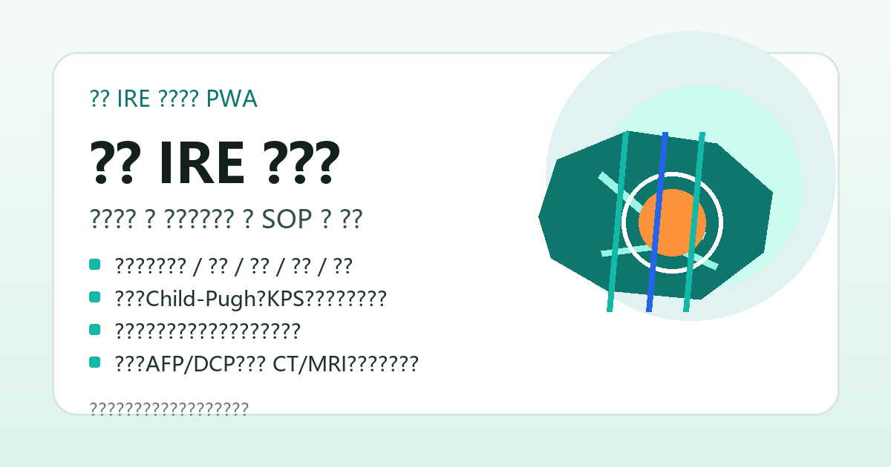

核心推荐
用 10 条推荐意见抓住指南主干：高危部位优势、术前评估、布针、用药预防、随访。

肝癌 IRE 轻松学
知识库 · 题库 · SOP
肝癌 IRE 消融专家共识与临床实践指南Expert consensus and clinical practice guideline for liver cancer IRE ablation
IRE 可以理解为：用高压电脉冲精准处理肝内病灶，尽量保护邻近血管、胆管、肠道、膈肌和肝门等重要结构。IRE uses high-voltage electrical pulses to ablate liver tumors while preserving adjacent vessels, bile ducts, bowel, diaphragm, and hepatic hilum structures.
知识库
主要包含指南核心内容、适应证、禁忌证、并发症、手术方式、随访与疗效评价。收藏按钮会记录你的重点。A searchable knowledge base covering recommendations, indications, contraindications, complications, workflow, and follow-up.
用 10 条推荐意见抓住指南主干：高危部位优势、术前评估、布针、用药预防、随访。
重点看病灶直径和数目、邻近重要结构、Child-Pugh A/B、KPS、全麻耐受和心脏风险。
包括术前影像、全身评估、全麻深肌松、影像引导、布针原则、消融参数和术后处理。
覆盖心律失常、血栓、出血、感染、肝功能异常、AFP/DCP、增强 CT/MRI 和超声造影。
确认肝脏恶性肿瘤特征、邻近结构、Child-Pugh、KPS 和全麻耐受，同步排除严重心脏、感染和凝血风险。
完成增强 CT/MRI、超声造影、血生化、凝血、血尿便常规、心肌酶谱、肿瘤标志物和麻醉会诊。
在气管插管全麻、深度肌松、心电同步和严密监测下，经 CT/超声引导布针，消融覆盖病灶外 0.5 cm 以上。
术后早期复查影像和实验室，完全消融后每 3 个月复查肿瘤标志物、超声、增强 CT/MRI。
知识补充
这部分作为知识库补充，帮助把入排、手术和随访串起来。A concise pathway linking patient selection, procedure, and follow-up.
SOP 操作流程
主入口是 SOP 指导；其他标签作为术前、布针、随访和并发症的补充速查。Use the SOP tab as the main workflow; the other tabs provide quick references for preparation, electrode placement, follow-up, and complications.
先判断病灶特征、肝功能、全麻耐受和禁忌证，明确能不能做。
完成检查、团队、麻醉、设备和药品准备。
按增强 CT/MRI 与超声造影确定穿刺路径、消融边界和针间距。
测试脉冲后观察电流走势，在心电同步和深肌松下完成消融。
复苏监护、复查肝肾功能和影像，按风险使用抗生素、抗凝和镇痛。
监测 AFP、异常凝血酶原、超声、增强 CT/MRI，及时发现残留、复发或新发病灶。
确认是否为临床或病理确诊的肝脏恶性肿瘤，重点评估病灶直径、数目、邻近肝门/胆管/血管/肠道/膈肌等重要结构、Child-Pugh A/B、KPS > 50 和全麻耐受；同步排除 Child-Pugh C、严重心肺脑肝肾功能障碍、不可纠正凝血异常、活动性感染、心脏起搏器、严重心律失常或近期大面积心梗等禁忌证。
完善腹部增强 CT/MRI、超声及超声造影，明确病灶数目、大小、形态、边缘、血供和毗邻结构；常规完成心电图、胸部 CT、肺功能、超声心动图、血尿便常规、血生化、凝血功能、心肌酶谱和肿瘤标志物。
术前完成麻醉会诊；治疗需在气管插管全麻、深度肌松、严密血流动力学和心电监测下进行。确认超声/CT 设备、IRE 治疗仪、心电同步仪、电极针、生命体征监护、麻醉机、除颤仪、急救车、麻醉药品和抢救药品到位。
按病灶位置、大小和形态选择 2-6 支电极针；超声引导常用 2-3 支。根治性消融应覆盖病灶及周围 0.5 cm 以上安全边界；电极针尽量两两平行、深度一致，常见针间距约 1.2-2.4 cm。
参数可参考设备说明书：电场强度常见 1000-3000 V/cm，脉宽 70-90 μs，脉冲数约 70-100 个。先释放 10-20 个测试脉冲并观察电流，正式消融后即刻用超声造影或增强 CT/MRI 判断消融覆盖和并发症。
术后 1 个月用增强 CT/MRI 或超声造影评价完全消融；完全消融后建议每 3 个月复查血清学肿瘤标志物、超声、增强 CT/MRI。发现局部强化、肿瘤标志物升高或新发病灶时，按残留、复发或新发病灶路径处理。
临床或病理确诊，单发直径 <= 5 cm；或多发数目 <= 3 个、最大直径 <= 3 cm；邻近肝门、血管、胆管、膈肌或胃肠道等重要结构时更能体现 IRE 优势。
不能手术切除的较大肿瘤可考虑姑息性消融或与其他治疗联合；多发肝转移癌可结合靶向、化疗或免疫治疗综合决策。
ECOG > 2、Child-Pugh C 且无法改善、门脉主干或肝静脉癌栓、活动性感染、不可纠正凝血异常、心脏起搏器、严重心律失常或近期大面积心梗均需重点排除。
IRE 的价值在于靠近重要结构时仍能非热消融；但前提是病灶地图清楚、心脏/凝血/感染/麻醉风险可控。
根治性治疗中消融区应完全覆盖病灶及周围 0.5 cm 以上。两针裸露段之间形成有效消融区域，针要尽量两两平行、深度一致；靠近血管、胆囊、肠管时避免针尖垂直接触重要结构。
For curative ablation, the ablation zone should cover the tumor plus at least a 0.5 cm safety margin. The effective ablation zone forms between paired parallel electrodes.
肝脏布针全表
覆盖病灶大小对应电极针数、超声 2/3 针方案、CT/超声引导要点、针距与参数、特殊结构旁注意事项。
Complete liver electrode placement summary from the consensus and guideline: needle number by tumor size, ultrasound 2-/3-needle strategies, CT/US guidance, spacing, parameters, and high-risk anatomy precautions.
高压电脉冲可能诱发心律失常，病灶邻近心脏或膈下时尤其谨慎；治疗需心电同步，异常时暂停并处理。
邻近门静脉或下腔静脉病灶需严控适应证；围消融期可按风险预防性使用低分子肝素。
多与电极针机械损伤血管或肿瘤侵犯血管壁有关；活动性出血可考虑介入栓塞、热消融止血或手术处理。
胆道损伤、胆汁漏、肠管侵犯或胆肠吻合史会增加感染和肝脓肿风险；术前路径规划和抗感染策略很关键。
知识补充
不是降低严谨性，而是先把意思讲明白。Plain-language definitions without reducing clinical rigor.
用药模块
根据肝脏恶性肿瘤 IRE 专家共识和超声引导肝癌 IRE 指南整理，重点覆盖麻醉、肌松、抗感染、抗凝、镇痛和支持治疗。Medication reference for anesthesia, muscle relaxation, infection prevention, anticoagulation, analgesia, and supportive liver care.
停止抗凝和活血药物；短效抗凝药按规范停用。胆道梗阻者先行非金属支架或经皮胆道引流。
气管插管全麻，常见诱导药包括丙泊酚或依托咪酯；镇痛以短效瑞芬太尼为佳，由麻醉医生个体化执行。
联合非去极化肌松药达到深度肌松，必要时用降压或抗心律失常药处理血压、心率波动。
心电监护、补液和营养支持；按感染风险使用抗生素，按血栓风险和出血排查结果使用低分子肝素。
复查肝肾功能、血尿便常规和影像；疼痛、发热、肝功能异常、出血或血栓迹象需及时处理。
肝癌 IRE 需在气管插管全身麻醉下完成，术中镇痛以短效、可控为主。
深度肌松可减少高压脉冲导致的肌肉收缩、电极移位和血流动力学波动。
围消融期可根据患者和病灶情况预防性使用，尤其关注胆道感染、胆汁漏、胆肠吻合史和肝脓肿风险。
术后如排除腹腔出血，可按风险预防消融区域血管内血栓形成。
电脉冲可引起血压升高或心率增快，需由麻醉医生根据监测结果及时处置。
术后疼痛多为轻度；中重度疼痛需先排除急腹症、出血、胆漏或感染等并发症。
肝癌 IRE 后可出现短暂转氨酶升高，需结合基础肝病、消融范围和复查结果处理。
术前胆道梗阻患者建议植入胆道支架或行经皮穿刺胆系引流；近消融区支架宜注意非金属选择。
考试题库
包含单选、多选、判断、排序、填空和病例题。答错会显示解析，方便回到知识库复习。Training questions with explanations for review and self-assessment.
先掌握入排标准、手术方式、随访和并发症。
用时间线理解术前、术中、术后各阶段任务。
先做单选、判断，检查关键概念是否记牢。
再做多选、排序和填空，训练细节掌握。
把知识放进真实场景，练习判断下一步。
根据解析回到对应模块复习，不追求一次全对。